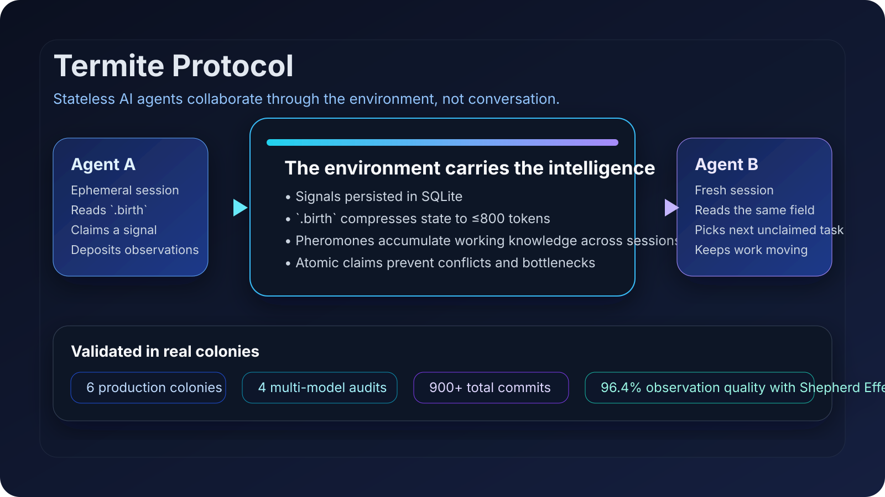

会话天然无状态
每次会话都像从零开始，所以连续性必须来自模型之外的别处。
白蚁协议通过 SQLite 信号、原子认领、紧凑的 .birth 快照和跨会话场记忆，让新的 AI Agent 会话可以直接接上真实仓库工作。

.birth ≤ 800 tokens新会话读到的是到达快照，而不是一大本规则手册。大多数 AI 编码 Agent 都是无状态的。每个新会话都可能重新摸索项目结构、重复犯错、再次丢失设计上下文。依赖对话的协调方式一旦遇到上下文成本、漂移和弱模型，很快就会变脆。
每次会话都像从零开始，所以连续性必须来自模型之外的别处。
当状态被一次次转述，细节、判断和约定会在 handoff 中不断损耗。
便宜模型未必不能执行，但它们通常不擅长主动发起高质量、多轮稳定的工作模式。
白蚁协议把协作能力放进仓库环境本身。它不靠越来越长的聊天历史维持连续性，而是把运行态直接写进场里。
Agent 不需要彼此对话，只需要感知共享状态并继续工作。
.birth 中.birth 把当前蚁丘状态压缩成紧凑快照，因此新会话不必重读 28K token 的协议文档。
强模型先留下模式，弱模型沿着模式做事，从而提升整个蚁群的群体输出质量，而不是让每个工人都变得同样昂贵。
mkdir termite-demo && cd termite-demo
curl -fsSL https://raw.githubusercontent.com/
billbai-longarena/Termite-Protocol/main/install.sh | bash
./scripts/field-arrive.sh
./scripts/field-pulse.sh
sqlite3 .termite.db "select id,status,title from signals;"这套协议已经在真实蚁丘和审计包中被反复演练，其中 Shepherd Effect 配置下，1 个强模型和 2 个弱工人实现了 96.4% 的观察质量。
弱模型可以执行协议循环，但很难独立维持判断力和结构质量。
强模型先在场中播种，后续弱工人模仿模式，蚁群整体行为远高于纯弱模型质量。
规模提升吞吐，但场仍需要抑制稀释效应与饥饿问题的机制。
每个新 Agent 读取有上界的快照，原子认领任务，执行工作，再把观察写回场中，供下一个会话接力。
field-arrive.sh 根据当前蚁丘状态计算 .birth。
field-claim.sh 原子认领下一个未分配信号。
Agent 根据场快照完成工作，而不是重放一整段对话历史。
field-deposit.sh 把观察、决策和状态留给下一个工人。
白蚁协议不是把对话当主协调骨架，而是把环境当主协调骨架。信号、场记忆和恢复提示都沉积在仓库里，所以协作能力可以跨越会话边界保留下来。
不需要。协议本身就可以单独安装、单独使用。自动化层只是后续可叠加的配套能力，不是前置条件。
不会。它做的是放大强模型的杠杆，并让弱模型在同一个场中变得更可用。
这个站点刻意保持轻量，所以当前最快的方式就是邮件。按你的目的选择入口，告诉我们你想如何把白蚁协议用进真实工程里。
订阅后可以收到新版本、审计结论，以及关于跨会话协作的新模式总结。
加入 Newsletter如果你想了解试点、接入窗口或下一波生态能力进展，可以先加入 Waitlist。
加入 Waitlist合作、生产问题、研究交流，或者任何需要认真聊一聊的话题，都可以从这里开始。
联系 Bill